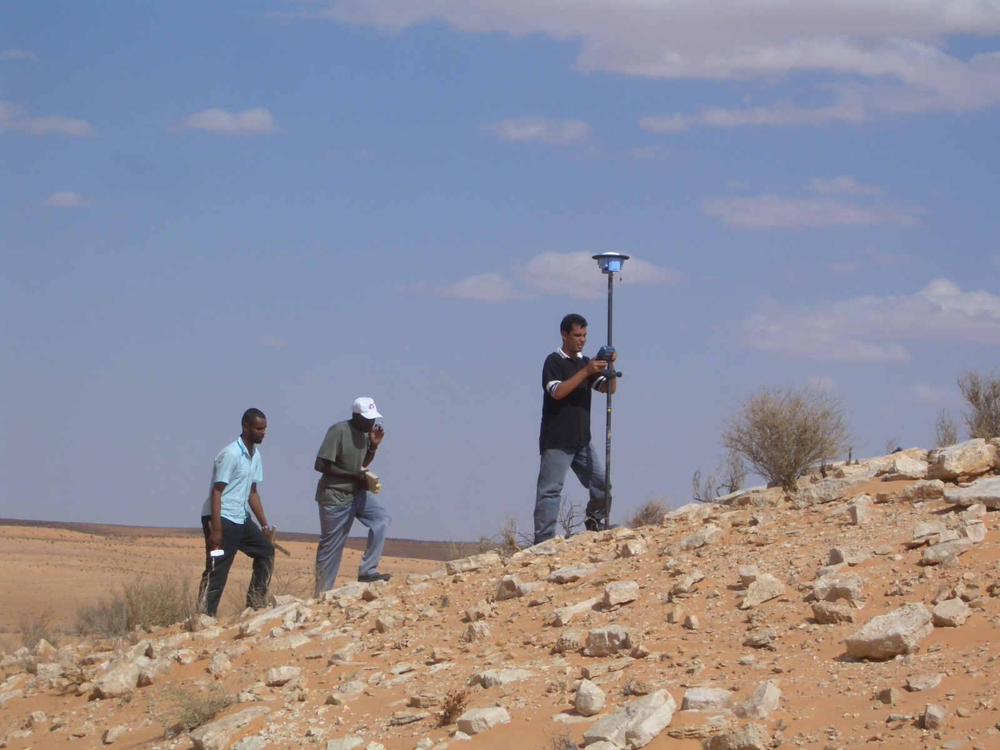
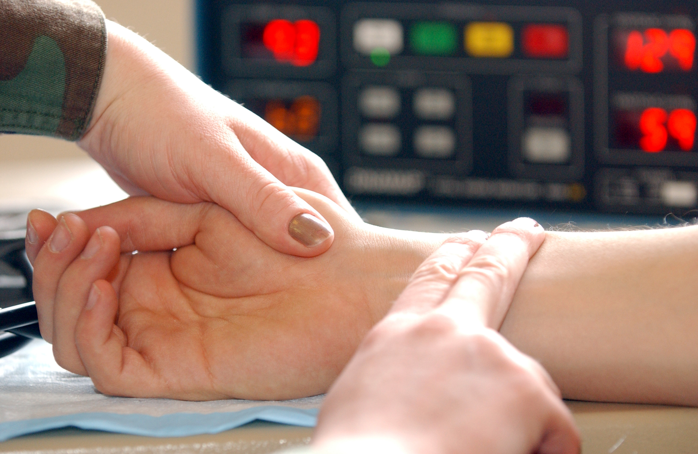
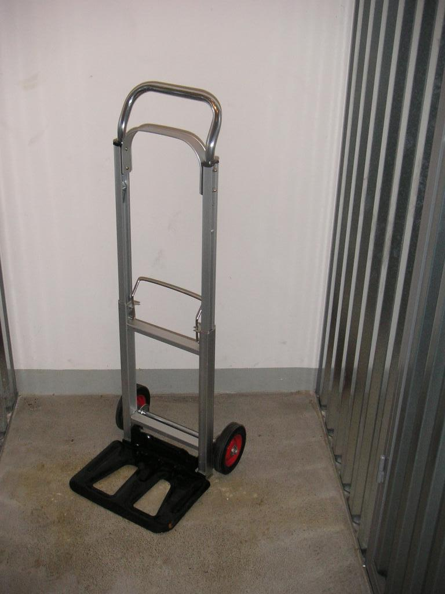

Pendidikan Jasmani & HSE Geofisika
Sumber dan lisensi visual
Pertemuan 2 dan 3 · diperiksa 28 Oktober 2026
Foto dipilih berdasarkan lisensi pada halaman berkas, bukan berdasarkan lisensi umum situs Wikipedia. Foto ditampilkan sebagai ilustrasi konteks; orang dalam foto tidak dinyatakan mengalami kondisi kesehatan atau melakukan pelanggaran keselamatan tertentu.
Seismic Survey Party

Foto: Wsx2. CC BY-SA 3.0.
Halaman berkas dan keterangan lisensi di Wikimedia Commons

Ditampilkan utuh dengan perubahan ukuran, tanpa pemotongan. Foto berlisensi CC BY-SA tetap disediakan dengan lisensi asalnya.
Radial pulse

Foto: U.S. Air Force / Staff Sgt. Jeanette Copeland. Domain publik.
Halaman berkas dan keterangan lisensi di Wikimedia Commons

Ditampilkan utuh dengan perubahan ukuran, tanpa pemotongan. Foto berlisensi CC BY-SA tetap disediakan dengan lisensi asalnya.
Sackkarre

Foto: Priwo. Domain publik (PD-self).
Halaman berkas dan keterangan lisensi di Wikimedia Commons

Ditampilkan utuh dengan perubahan ukuran, tanpa pemotongan. Foto berlisensi CC BY-SA tetap disediakan dengan lisensi asalnya.
Sleeping Man

Foto: Imogenisla. CC BY-SA 3.0.
Halaman berkas dan keterangan lisensi di Wikimedia Commons

Ditampilkan utuh dengan perubahan ukuran, tanpa pemotongan. Foto berlisensi CC BY-SA tetap disediakan dengan lisensi asalnya.
BGP Camp 8652, Night View

Foto: Gyan Bahadur Khattri. CC BY-SA 4.0.
Halaman berkas dan keterangan lisensi di Wikimedia Commons

Versi 1280 piksel dari Wikimedia Commons; utuh, tanpa pemotongan. Foto berlisensi CC BY-SA tetap disediakan dengan lisensi asalnya.
Diagram penjelas
Diagram aliran oksigen, respons aktivitas, momen gaya, ritme sirkadian, fase tidur, serta alur JSA disusun khusus untuk materi ini. Diagram bukan salinan ilustrasi dari buku atau situs sumber. Konsepnya merujuk pada referensi ilmiah yang tercantum di catatan slide dan materi pertemuan.
Diagram skematis diberi penjelasan batas interpretasi. Panjang panah atau tinggi batang yang tidak bersatuan tidak mewakili hasil pengukuran. Diagram pada PowerPoint berupa objek yang dapat diedit.